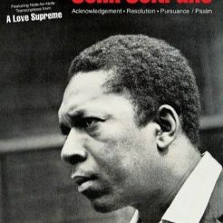
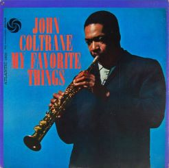
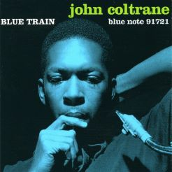

A Love Supreme (1965)
"A Love Supreme", released in 1965. This spiritually charged masterpiece is a four-part suite that expresses Coltrane's deep gratitude and devotion to a higher power. Known for its spiritual and transformative qualities, the album features Coltrane's quartet, including McCoy Tyner on piano, Jimmy Garrison on bass, and Elvin Jones on drums. "A Love Supreme" is celebrated for its innovative use of modal jazz and Coltrane's powerful, emotive playing. It remains one of the most influential and revered albums in the history of jazz, conveying a profound spiritual message through its musical brilliance.

My Favorite Things (1961)
"My Favorite Things" is a landmark jazz album by saxophonist John Coltrane, released in 1961. The title track, a rendition of the classic song from the musical "The Sound of Music," became a major hit and showcased Coltrane's exploration of modal jazz. The album features Coltrane's innovative reinterpretations of popular tunes, including "Summertime" and "But Not For Me." With its fusion of traditional jazz and Eastern influences, "My Favorite Things" marked a turning point in Coltrane's career, foreshadowing his later ventures into avant-garde and free jazz. The album remains a significant and influential work in the history of jazz.

Blue Train (1969)
"Blue Train" is a classic jazz album released in 1957. The title track, "Blue Train," is a hard bop composition that became one of Coltrane's signature pieces. The album features a stellar lineup, including Lee Morgan on trumpet and Curtis Fuller on trombone. Known for its energetic and soulful performances, "Blue Train" is considered a quintessential recording of the hard bop era. The album showcases Coltrane's distinctive style and serves as a testament to his emerging brilliance as a bandleader and innovator in the world of jazz.